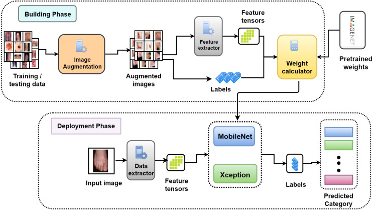
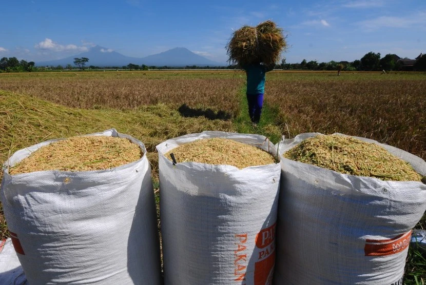
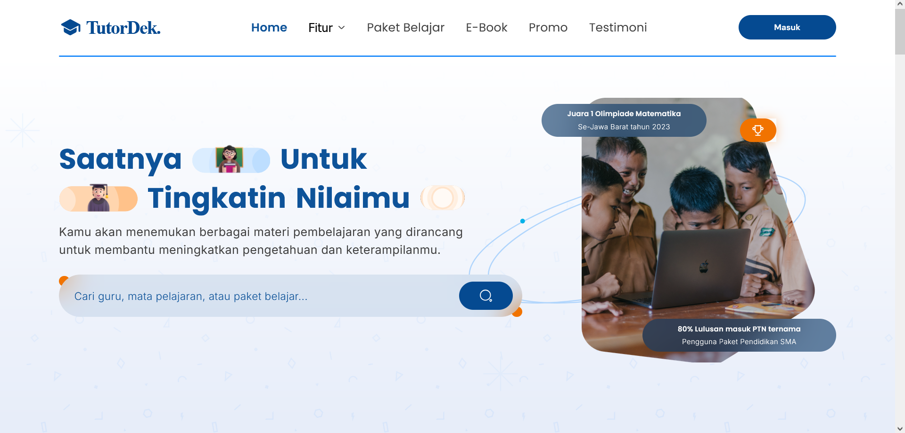
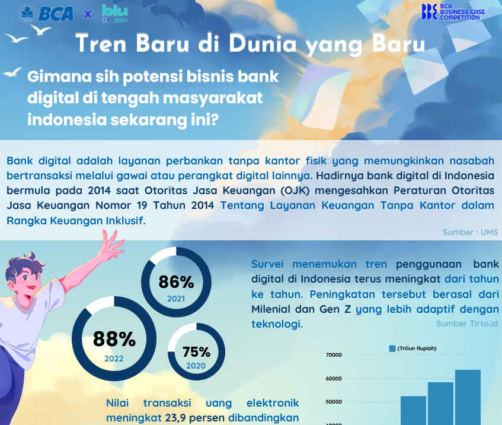

Featured Portfolio
- All
- Data Analytic
- Deep Learning
- Machine Learning
- Database
- Software Engineer


NLP LLM-Based Chatbot Model
- Python
- Flask
- Tensorflow
- HuggingFace
- LLM
- RAG
- Gradio
This project implements an AI chatbot using Large Language Models (LLM) and Retrieval Augmented Generation (RAG) techniques to provide detailed answers based on knowledge extracted from PDF documents.

Speech Emotion Recognition
- Python
- Keras
- Tensorflow
- Librosa
- CNN
Developed a Speech Emotion Recognition system using Convolutional Neural Networks (CNN) with TensorFlow. The project involved training a model to recognize emotions from speech input, utilizing audio features for accurate emotion classification.

Patient's Condition Classification Using Drug Reviews
- Python
- Scikit-Learn
- Streamlit
Analyze the disease description to predict the specific medical condition or diagnosis using advanced machine learning algorithms (XGBoost, PAC, LR) and natural language processing techniques (TF-IDF, Word2Vec).


A Comparative Study of Deep Learning Algorithms for Image Based Classification of Hyperpigmented Skin Disease
- Python
- Tensorflow
- Keras
- CNN
- YOLO
Analyze and compare for hyperpigmented skin disease using machine learning and deep learning techniques. The study analyzed pretrained models like YOLO, DenseNet201, GoogLeNet, InceptionResNetV2, and MobileNet.


Twitter Sentiment Analysis - Comparing Traditional Methods with Deep Learning Methods
- Python
- Tensorflow
- Keras
- PyTorch
- NLTK
- LSTM
- LR
This project aims to analyze and classify sentiments expressed in Twitter posts using both traditional machine learning and deep learning techniques. The traditional method employs logistic regression to classify tweets, while the deep learning method leverages Long Short-Term Memory (LSTM).

Doctor Hunter
- Java
- JavaFX
- SQL
- MySQL
- JDBC
Doctor Hunter is a fun comprehensive GUI-based application project developed using JavaFX and connected to SQL database using JDBC, designed to streamline the process of scheduling doctor appointments and managing healthcare-related tasks.
COVID-19 Data Analysis
- Python
- Pandas
- NumPy
- Matplotlib
- Seaborn
Performed an in-depth analysis of COVID-19 data to identify critical insights and trends. The project included data collection, cleaning, and exploratory data analysis (EDA) to visualize the spread, infection rates, and recovery trends.
Earthquake Data Analysis in Indonesia
- Tableau
- Excel
- Canva
Conducted a comprehensive data analysis of earthquake occurrences in Indonesia to uncover key insights and patterns. This project involved collecting and cleaning earthquake data, performing exploratory data analysis (EDA), and visualizing significant trends and correlations.

Rice Price Prediction Model
- Python
- TKinter
- NumPy
- Pandas
Developed a machine learning model to predict the future price of rice based on historical pricing data. The model analyzes dozens of rice prices over time, utilizing various algorithms to provide accurate and reliable forecasts.

TutorDek
- HTML
- CSS
- Javascript
- Bootstrap
TutorDek is a web application designed to streamline the process of finding and hiring tutors for both students and educators. Our platform connects learners with qualified tutors in a wide range of subjects, providing a seamless experience for booking, scheduling, and managing tutoring sessions.

BCA Business Case Project
- Canva
- Excel
investigating the current landscape of digital banking in Indonesia, particularly how fintech and digital platforms are reshaping financial services. This involves analyzing the rise of seamless and convenient banking services that enhance financial inclusion and developing a strategy to position BCA Digital (blu) as a leader in the digital banking space.